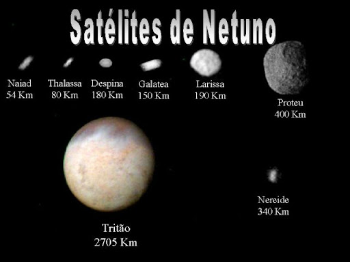
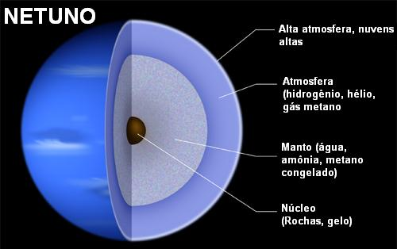

Netuno é um planeta gasoso do Sistema Solar, o oitavo a partir do Sol e o mais distante dele. É o quarto maior planeta do Sistema Solar em tamanho.

A gravidade do planeta Terra é cerca de 11,15m/s².
Netuno possui 14 satélites naturais, que são classificados em regulares e irregulares: Satélites regulares Seguem uma órbita elíptica no mesmo sentido da trajetória de Netuno. São eles: Náiade, Galateia, Talassa, Despina, Larissa, Hipocampo e Proteu. Satélites irregulares Apresentam uma órbita excêntrica e, em alguns casos, retrógrada, no sentido contrário à órbita do planeta. São eles: Tritão, Nereida, Halimede, Sao, Laomedeia, Psâmate e Neso. Tritão é o maior satélite de Netuno e foi descoberto em 1846. Hipocampo é o menor satélite do sistema netuniano.
Seu diâmetro é de aproximadamente 49.244 Km.
A composição atmosférica de Netuno é composta por: 80% de hidrogênio, 18% de hélio, 2% de metano. A atmosfera de Netuno é muito parecida com a de Urano, o planeta vizinho. A cor azulada brilhante de Netuno é resultado da grande quantidade de metano na atmosfera. Netuno é um gigante de gelo, devido à sua composição e à ausência de uma superfície sólida. O planeta tem uma temperatura média de -201 °C e é conhecido por ter os ventos mais fortes do Sistema Solar, que podem atingir 2 mil km/h.
A NASA tem um projeto de sonda espacial não tripulada para explorar o planeta Netuno, chamado Neptune Orbiter. O lançamento estava previsto para meados de 2016, mas agora está previsto para 2035. A sonda Voyager 2 da NASA foi a primeira e única a visitar Netuno, em 25 de agosto de 1989. A missão Voyager visitou os quatro planetas gigantes do sistema solar: Júpiter, Saturno, Urano e Netuno.